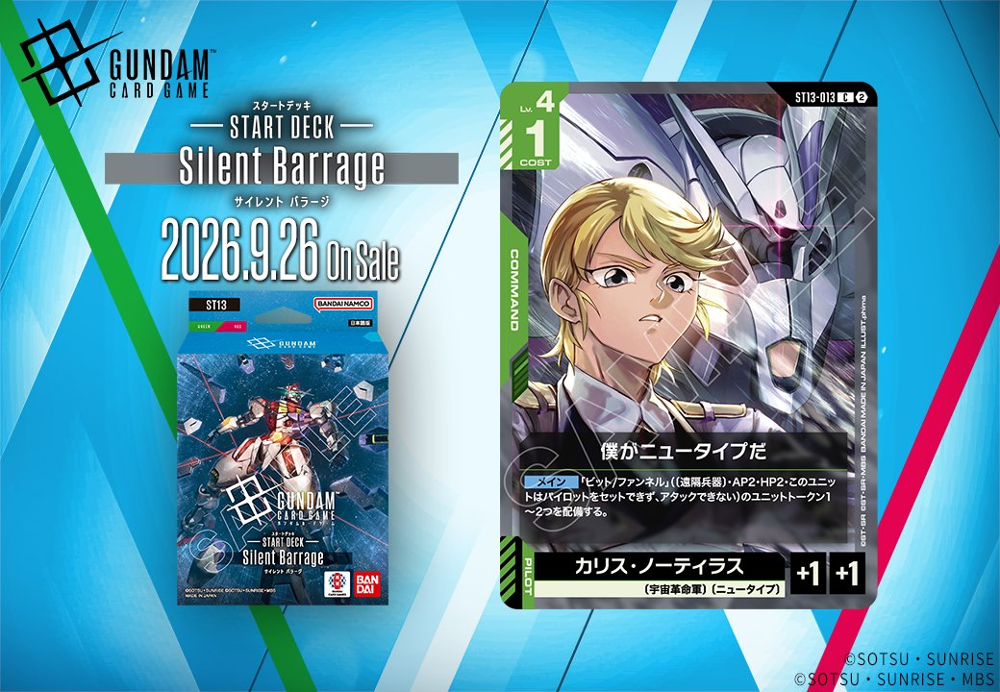

今回は複数の拡張から新カード4枚を紹介します。GD06「Phantom Aria」からは白のUNIT「シャイニングガンダム（明鏡止水）」（リンク条件「ドモン・カッシュ」、2026年10月31日発売）、ST13からは緑のCOMMAND「僕がニュータイプだ」（2026年9月26日発売）が登場します。特にST11では、同日公開のUNIT「シャンブロ」（リンク条件「ロニ・ガーベイ」）とPILOT「ロニ・ガーベイ」がリンクで結ばれる組合せとなっており、両カードを揃えることでリンク条件が成立する点が構築上のポイントです（いずれも2026年9月26日発売）。

シャイニングガンダム（明鏡止水） (GD06-071)
| 色 | 白 | タイプ | UNIT |
| Lv | 6 | コスト | 5 |
| AP | 4 | HP | 4 |
| 特徴 | 〔MF〕、〔シャッフル同盟〕 | ||
| リンク条件 | 「ドモン・カッシュ」 | ||
効果: ターン1回 自分のターン中、自分が(必殺技)のコマンドのメインアクションを発動したとき、相手のユニット1つを選ぶ。このターン中、それをAP-2する。そうしたなら、このユニットをAP+2する。
シャイニングガンダム（明鏡止水）（GD06-071）は白のLv.6ユニットで、AP4/HP4とコスト5相応の標準ステータス。ターン1回、自分のターン中に〔必殺技〕のコマンドのメインアクションを発動したとき、相手ユニット1つをAP-2し、成功すればこのユニットをAP+2できる。攻防両面を一度に動かせる効果で、相手のブロッカー役のAPを削りつつ自身を強化する運用が可能。 リンク先は「ドモン・カッシュ」で、GD05-097のドモンは【セット時】に〔必殺技〕のコマンドを捨てて【メイン】を発動できるため、その発動を本カードの誘発条件として活かせる点が噛み合う。〔必殺技〕コマンドを軸に据える白の〔シャッフル同盟〕デッキで運用する候補となる。2026-10-31発売のGD06収録カード。

僕がニュータイプだ (ST13-013)
| 色 | 緑 | タイプ | COMMAND |
| Lv | 4 | コスト | 1 |
| パイロット | カリス・ノーティラス（補正 AP+1 / HP+1） 〔宇宙革命軍〕、〔ニュータイプ〕 | ||
効果: メイン 『ビット/ファンネル』((遠隔兵器)・AP2・HP2・このユニットはパイロットをセットできず、アタックできない)のユニットトークン1〜2つを配備する。
COST1の緑コマンドで、AP2・HP2の『ビット/ファンネル』ユニットトークンを1〜2つ配備できる点が特徴。1枚で最大2体の盤面を並べられるため、コスト効率と展開力に優れる。ただしトークンはパイロットをセットできずアタックもできない仕様のため、用途はブロッカー等の防御的運用や、他効果でのコスト・数合わせに絞られる。2026-09-26発売のST13収録。

ロニ・ガーベイ (ST11-012)
| 色 | 紫 | タイプ | PILOT |
| Lv | 4 | コスト | 1 |
| 補正 AP | 2 | 補正 HP | 1 |
| 特徴 | 〔ジオン〕、〔ニュータイプ〕 | ||
効果: 【バースト】このカードを手札に加える。【セット時】〔水中〕の味方のユニット1つを選ぶ。このターン中、それが相手のユニットからバトルダメージを受けるとき、そのダメージを2軽減する。
ロニ・ガーベイ(ST11-012)はCOST1/AP2/HP1の紫パイロット。【セット時】で〔水中〕の味方ユニット1つが受けるバトルダメージをこのターン中2軽減する防御寄りの効果を持ち、【バースト】で手札に戻せる点も無駄がない。 同日公開のシャンブロ(ST11-006)とはリンク条件が成立し、〔水中〕ユニットとして同一ユニット上で運用可能。シャンブロ側の相手ターンのシールド効果ダメージ軽減とは別タイミングだが、〔水中〕主体のデッキ構築で親和性が高い。 2026-09-26発売。AP2/HP1と自衛力は低いため、【セット時】のダメージ軽減で〔水中〕ユニットを盤面に残す運用が主眼となる。


シャンブロ (ST11-006)
| 色 | 紫 | タイプ | UNIT |
| Lv | 6 | コスト | 5 |
| AP | 4 | HP | 5 |
| 特徴 | 〔ジオン〕、〔水中〕 | ||
| リンク条件 | 「ロニ・ガーベイ」 | ||
効果: 相手のターン開始時、このユニット以外の〔水中〕の味方のユニットがいるなら、このターン中、味方のシールドエリアのカードが相手から効果ダメージを受けるとき、そのダメージを5軽減する。【配備時】自分のトラッシュの〔水中〕のユニットカード1枚を選ぶ。それを手札に加える。
シャンブロ(ST11-006)はCOST5でAP4/HP5、【配備時】に自分のトラッシュの〔水中〕ユニットを手札に回収でき、〔水中〕を軸にしたリソース確保役として機能する。相手ターン開始時に別の〔水中〕味方がいれば、シールドエリアへの効果ダメージを5軽減する常駐型の防御効果を持つため、水中ユニットを並べる構築との親和性が高い。 リンク先の「ロニ・ガーベイ」(ST11-012)を搭載すればリンク条件が成立し、【セット時】でこのユニット自身をバトルダメージ2軽減の対象に選ぶことも可能。ただしシャンブロの【配備時】とロニの【セット時】は別タイミングのトリガーであり同時発動ではないため、それぞれ独立して運用する点に注意したい。2026-09-26発売。


関連カード
-
 シャイニングガンダム(GD05-066)白系デッキ内採用率2.1% (96デッキ)
シャイニングガンダム(GD05-066)白系デッキ内採用率2.1% (96デッキ) -
 ドモン・カッシュ(GD05-097)白系デッキ内採用率2.1% (96デッキ)
ドモン・カッシュ(GD05-097)白系デッキ内採用率2.1% (96デッキ) -
 シャイニングフィンガー(GD05-120)白系デッキ内採用率2.1% (95デッキ)
シャイニングフィンガー(GD05-120)白系デッキ内採用率2.1% (95デッキ) -
 ガンダムマックスター(GD05-069)白系デッキ内採用率2.1% (94デッキ)
ガンダムマックスター(GD05-069)白系デッキ内採用率2.1% (94デッキ) -
 ライジングガンダム(GD05-072)白系デッキ内採用率2.1% (94デッキ)
ライジングガンダム(GD05-072)白系デッキ内採用率2.1% (94デッキ) -
ドモン・カッシュ(GD05-097_p1)白系デッキ内採用率0% (0デッキ)
-
 ザクⅡ(ST03-008)緑系デッキ内採用率18.7% (856デッキ)
ザクⅡ(ST03-008)緑系デッキ内採用率18.7% (856デッキ) -
 リック・ドム(GD01-030)緑系デッキ内採用率17.9% (817デッキ)
リック・ドム(GD01-030)緑系デッキ内採用率17.9% (817デッキ) -
 ザクⅡ（シャア・アズナブル機）(ST03-006)緑系デッキ内採用率12% (548デッキ)
ザクⅡ（シャア・アズナブル機）(ST03-006)緑系デッキ内採用率12% (548デッキ) -
 ウイングガンダムゼロ(GD01-024)緑系デッキ内採用率11.6% (530デッキ)
ウイングガンダムゼロ(GD01-024)緑系デッキ内採用率11.6% (530デッキ)